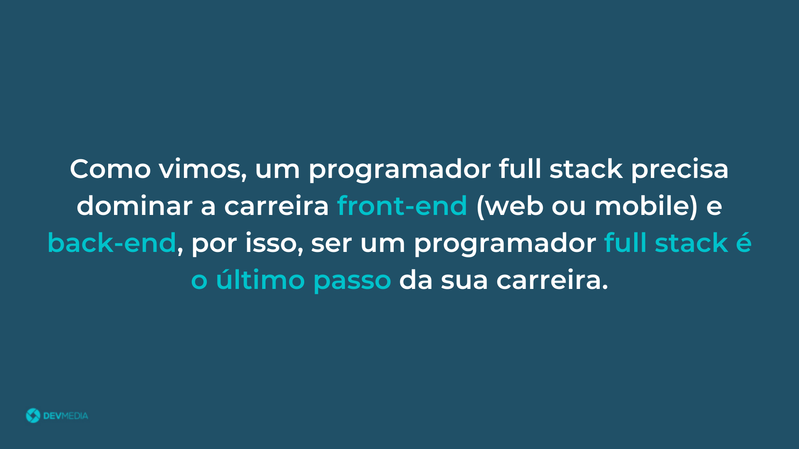
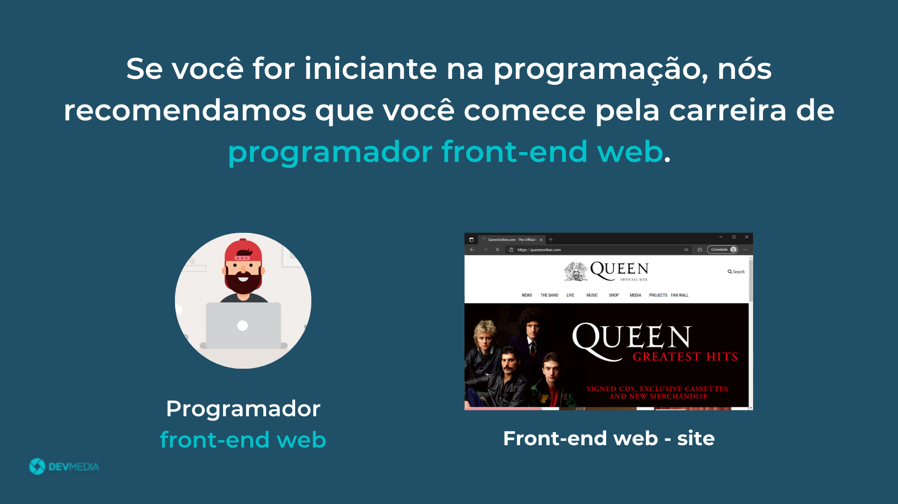
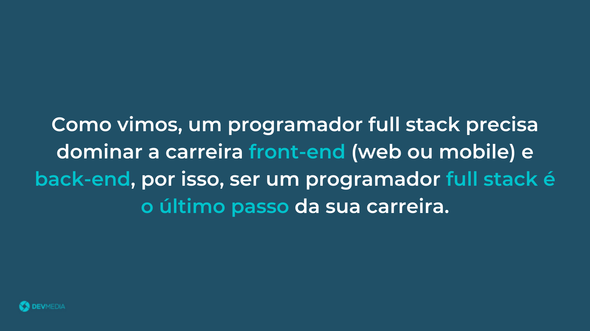
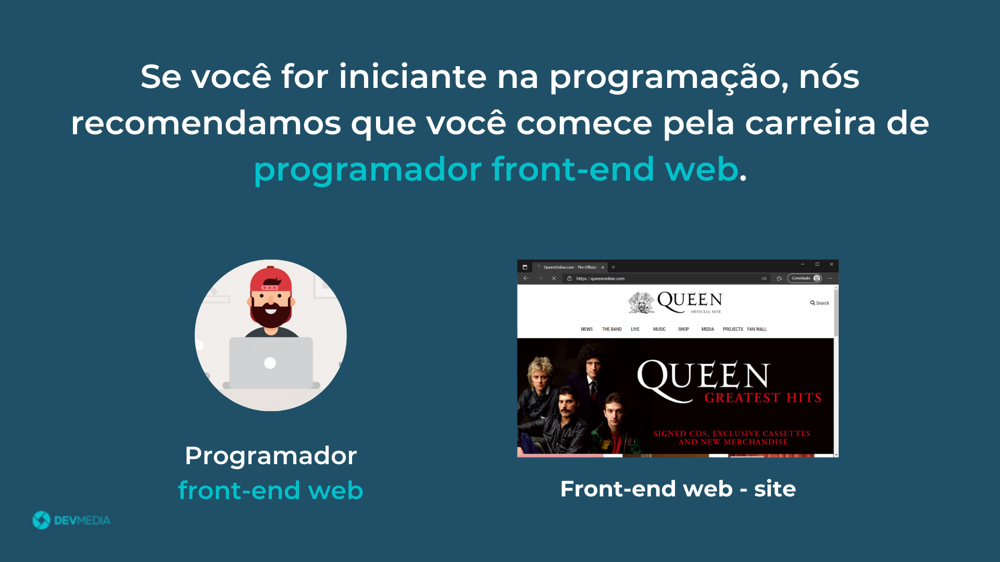

Seja bem-vindo(a) à programação e parabéns pela iniciativa.
Através do flow abaixo você vai conhecer as carreiras da programação:
O programador Full Stack domina tanto a carreira front-end
quanto a carreira back-end
Já conheço as carreiras disponíveis na programação, mas qual eu devo seguir?
O flow abaixo responde essa pergunta:
 





Figura 1. Representação da carreira Full Stack
Para quem está dando os primeiros passos na programação, recomendamos o Plano de estudos Programador Front-End (web). Caso você já tenha conhecimentos na programação, sinta-se à vontade para escolher qualquer uma das carreiras